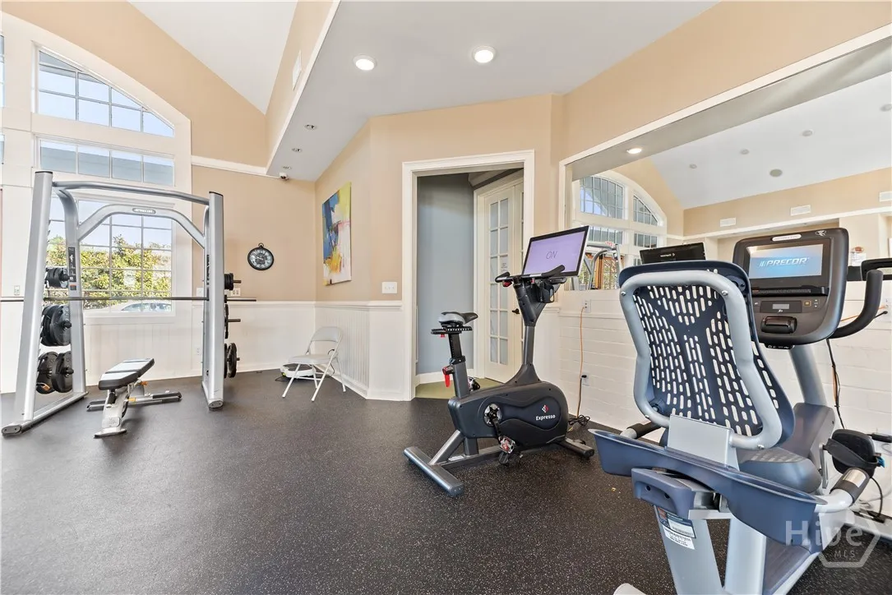

Photo pair 1


geometrically_supported
Shared-image context: SHARED IMAGE: shared-3945 appears in 2 Airbnb listings; possible generic imagery or related hosts, not property-specific evidence
Hash / geometric comparison evidence
{
"hash_hamming": {
"dhash": 0,
"phash": 0,
"center_phash": 0
},
"hash_min": 0,
"priority_policy": "obvious_v2_both_phashes_le_6_realtor_shared_excluded",
"exact_hash_hamming": {
"phash": 0,
"center_phash": 0
},
"orb_ransac": {
"score": 0.7430013422818792,
"detail": {
"inliers": 744,
"ratio_matches": 745,
"coverage": 0.39735509610099773,
"homography": [
[
0.9993198342914036,
-0.0004984196063406013,
0.49002012399256595
],
[
-0.0001093015005152098,
0.999309101163537,
0.3118890383838226
],
[
-6.520779390938166e-07,
-3.577739756464458e-07,
1.0
]
]
},
"comparison_ms": 11.454923995188437,
"feature_lookup_or_extraction_ms": 75.70975100679789
}
}